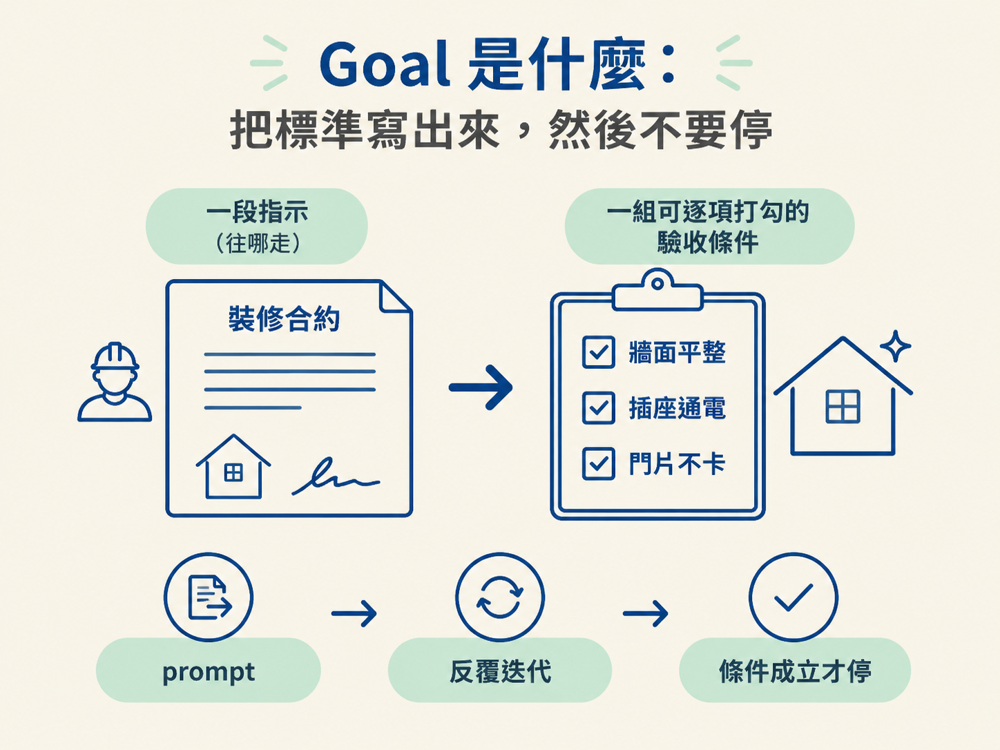
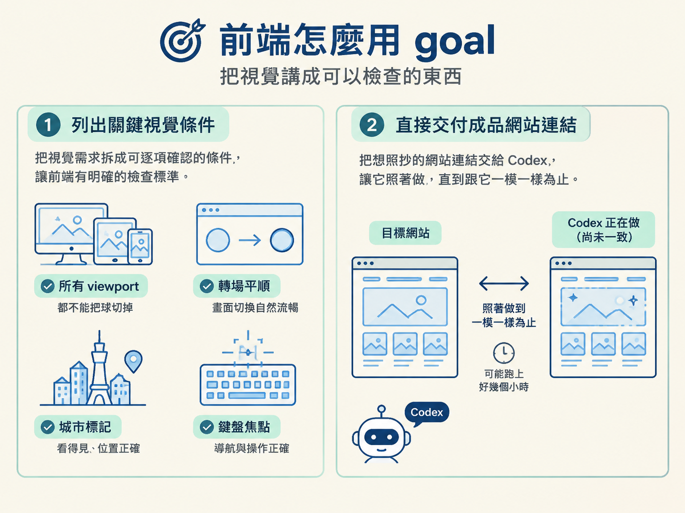
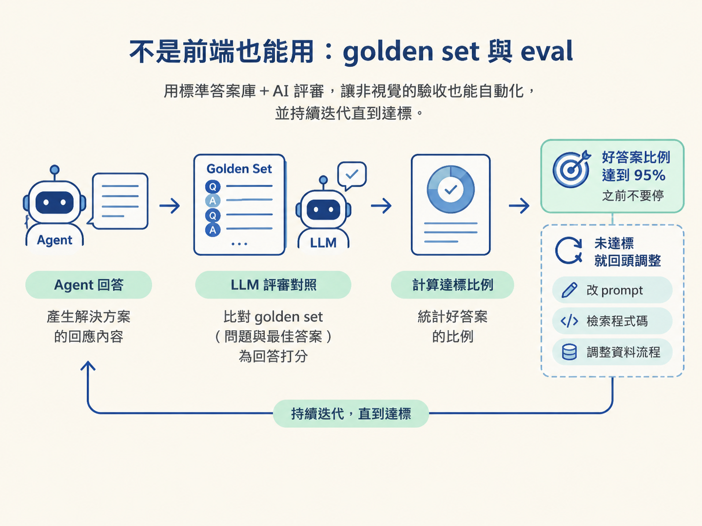

上一階段結束時，資產出現了，但動畫是歪的：sprites 在球的正中央淡出，轉場像投影片切換。你的直覺反應大概是：再下一句 prompt，叫它修。
問題是，這類技術難題很少是一則 prompt 收得掉的。你可能會來回修十幾輪，而且每一輪都要重新描述一次「哪裡還是不對」。更麻煩的是，Codex 常常在第一次 pass 之後就停下來回報「完成了」，哪怕畫面根本還沒到位。它覺得做完了，但你一看就知道沒有。
這一節要介紹的 /goal，解的就是這件事。你把「做到什麼程度才算完成」講清楚，然後放手讓 Codex 自己反覆試、自己檢查，直到條件成立為止。它不是另一句比較長的 prompt，而是一套「交辦成果並定義完工標準」的機制。
一個 goal 由兩件事組成：一段告訴 Codex 往哪走的 prompt，加上一組驗收條件，讓它知道什麼時候才算做完。
你可以把它想成裝修師傅的合約。你不會只說「幫我弄好看一點」，而是列出「牆面平整、插座通電、門片不卡」這種可以逐項打勾的完工標準。標準寫得出來，工作才有終點；寫不出來，就只能一直喊「感覺怪怪的」。

它最關鍵的性質是「不停」。平常的對話裡，Codex 做一次、覺得差不多就交差。但在 goal 模式下，如果你寫的是「在這些條件成立之前不要停」，它就會一直繞回同一個問題、一直改，直到它能驗證那些條件真的成立。這也是為什麼 goal 特別適合「要好幾輪才做得完、又偏難」的工作。
很多人以為 goal 一旦開跑就不能碰了，其實剛好相反。它跑的時候你可以插話。
看到它往不對的方向發展，就送一則新 prompt 把它拉回來；發現自己漏了條件，也可以中途補上。比較貼切的比喻是「你還握著方向盤的長途自駕」，而不是「發射後就不管的飛彈」。
這個「跑動中修正」的能力，讓 goal 也適合探索性的任務。你可以邊看它跑、邊判斷要不要調整目標，不必一開始就把所有細節都想完。
前端這種有視覺成果的工作，正好是 goal 的好球帶。做法是：先把「最終畫面應該長什麼樣」描述成明確、可以逐項確認的視覺條件，再加上一句「在這些都成立之前不要停」。
這個例子裡實際用到的條件包括：所有 viewport 都不能把球切掉、轉場要平順、城市標記要看得見、鍵盤焦點行為要正確。這些都是「看一眼就知道有沒有」的項目，Codex 也能自己回頭檢查。
講者還提到一種更進階的玩法：如果你手上有一個已經是成品、看了就想照抄的網站，可以把那個連結給 Codex，要它「照著做，直到跟它一模一樣為止」。這種做法效果很強，但可能跑上好幾個小時。除非時間充裕，否則先從「列出關鍵視覺條件」這種務實版本開始就好。

驗收條件不一定要是視覺的。當工作跟「回答品質」有關時，可以用一組標準答案（golden set）當作驗收條件。
講者的真實例子是公司官網上的 doc agent：有一組由解決方案架構師親手寫好的問題與最佳答案，再用另一個 LLM 當評審，判斷 agent 的回答好不好。於是 goal 的條件就變成一句簡單的指標：「在這些例子裡拿到 95% 以上的答案是好的之前不要停」。中途它要改 prompt、改檢索程式碼、改資料更新流程，都可以自己決定。
那個 goal 一次跑了十多個小時。講者也提到，有同事的 goal 跑了好幾天，甚至有人在 goal 模式下把 Doom 移植到原生 iOS。共同點是：只要有一個「最終結果」拿得來檢查，Codex 就能不斷對照、不斷迭代，直到達標。

條件可以寫得很簡潔，也可以寫得很徹底，端看任務性質：
| 型態 | 長相 | 適合什麼任務 |
|---|---|---|
| 單一明確門檻 | 「好答案比例達到 95% 之前不要停」 | 有可自動計算的指標，例如 eval、評分 |
| 完整檢查清單 | 列出多個 viewport 與逐項視覺檢查 | 視覺成果、多條件交織的前端任務 |
單一門檻的好處是乾淨、好驗證，一個數字就決定過不過。清單的好處是能涵蓋「轉場平順、不被裁切、焦點正確」這種沒有單一分數、卻每一項都不可少的情況。
兩者不是互斥的。你也可以寫一份清單，裡面夾著少數幾個必須算數字的門檻。
判斷方式很直覺：當你知道這件事「需要好幾輪才做得完」，或者你已經預期 Codex 會在第一 pass 後就停下來喊完成，那就是開 goal 的時機。
反過來說，如果只是改一個標題顏色、調一個間距，一則 prompt 就夠了，開 goal 只是徒增來回。goal 的成本是時間，把它留給真的難、真的長、一次做不完的工作。
goal 是「一段指示＋一組驗收條件」的機制：Codex 盯著成果反覆迭代，直到條件成立才停。它能在跑動中轉向，適合需要多輪的長工與難工。驗收條件有兩種基本型態：可自動計算的單一門檻（例如 eval 的 95%），以及多條件交織的完整清單（例如各 viewport 的視覺檢查）。前端用視覺條件，回答品質用 golden set 加 LLM 評審。
goal 的核心就掛在一件事上：先想清楚「什麼叫做完」，再把這句話寫成可以逐項確認的條件。它和前面講的分階段 prompt 是同一條線上的兩端：prompt 負責把工作切成一段一段，goal 負責讓每一段真的做到位。
下一步就是把第三階段的 polish goal 實際寫出來。它會用到這裡的「完整檢查清單」，而且清單會細到列出每個 viewport 尺寸與每一項要看的東西。下一節見。